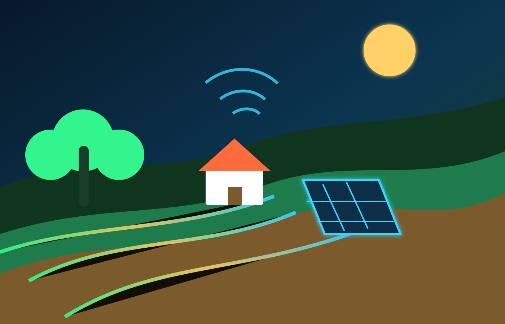

Terra monitorada
Sistemas modernos e chips na lavoura avisam a quantidade exata de nutrientes e água que o chão precisa, sem desperdiçar nada.
O que a gente estudou
O Agrinho não é só um concurso de colégio, é um empurrão que faz a gente debater cidadania, ecologia e inovação de verdade. Com este projeto, nossa turma começou a ver que a roça não se resume a plantar e colher; o campo hoje em dia é pura ciência, cuidado com a terra e tecnologia avançada.
Como estudantes dedicados, olhar para esses dados nos ajuda a entender de verdade a nossa região e a rascunhar ideias muito melhores para o futuro do nosso estado.

A real é que, quando o professor falou do Agrinho pela primeira vez, a gente achou que ia ser só mais uma pesquisa decorada para ganhar nota no boletim. Mas, mergulhando de cabeça no conteúdo, a nossa turma teve uma aula prática de como a sociedade e a natureza funcionam juntas. O que a gente aprendeu sobre isso é que existe uma engrenagem gigante girando entre a cidade e o campo. Aprendemos que temas complexos como segurança alimentar, rotação de culturas e preservação das bacias hidrográficas não são assuntos guardados apenas nos livros de biologia ou geografia. Eles estão acontecendo agora nas propriedades rurais ao redor da nossa cidade e afetam diretamente o preço e a qualidade do almoço que a gente come todo santo dia.
Isso é absurdamente importante no nosso dia a dia porque nos faz acordar para os problemas reais do mundo. Em vez de ficarmos rolando o feed das redes sociais sem pensar em nada, o projeto fez a gente discutir soluções para diminuir o desperdício de recursos e entender o valor do produtor rural. Quando a gente estuda o campo sob a ótica da sustentabilidade, percebemos que o equilíbrio ecológico não é uma ideia distante feita só para biólogos, mas uma meta urgente que depende das decisões que a nossa geração vai tomar a partir de agora.
O resumo do que foi estudado mostra que a escola cumpre o seu papel de verdade quando joga a gente para resolver desafios reais. Nós analisamos dados sobre o agronegócio paranaense, debatemos sobre o uso consciente da água e vimos que o desenvolvimento econômico não pode deixar um rastro de destruição. No fim das contas, criar este site e estruturar essa pesquisa serviu para consolidar que o conhecimento só faz sentido quando é usado para melhorar a vida das pessoas e proteger o meio ambiente. É a nossa visão de estudantes do ensino médio sendo colocada em código e conteúdo para tentar fazer a diferença no Paraná.
Ecologia na Prática
A conta fecha perfeitamente quando a ciência e o planejamento ajudam quem trabalha na terra a monitorar o solo, economizar cada gota d'água e dar um fôlego para as nossas florestas.
Sistemas modernos e chips na lavoura avisam a quantidade exata de nutrientes e água que o chão precisa, sem desperdiçar nada.
Cuidar das matas na beira dos rios e usar irrigação gota a gota faz com que as plantações aguentem firme até os períodos de seca.
Painéis solares e reaproveitamento de resíduos barateiam os custos e cortam a poluição, unindo economia e respeito à natureza.
Voos com câmeras especiais criam mapas térmicos e indicam onde aplicar defensores orgânicos apenas nas plantas que estão doentes.
Quando a gente se aprofunda nesses quatro pilares da sustentabilidade em ação, dá para notar que a tecnologia mudou totalmente as regras do jogo no campo. O que a gente aprendeu sobre isso nas pesquisas para o site é que a robótica, a internet das coisas (IoT) e a engenharia ambiental estão trabalhando juntas para criar o que os especialistas chamam de agricultura de precisão. Não se trata mais de espalhar insumos de qualquer jeito na terra inteira. Hoje em dia, os sensores enterrados no solo conversam com sistemas na nuvem para mandar a dose exata de água e minerais para cada semente. Isso evita que produtos químicos escorram para os lençóis freáticos e contaminem os rios da nossa região.
Essa matéria é vital para o nosso dia a dia porque escancara que as soluções para o futuro do planeta passam diretamente pelas ciências exatas e da natureza aplicadas de forma inteligente. Ver que painéis solares e biodigestores transformam o que antes era considerado lixo em energia limpa dá um estalo na nossa mente sobre economia circular. A gente começa a trazer esses conceitos para dentro da escola, organizando melhor o lixo que produzimos e cobrando atitudes ecológicas no nosso próprio bairro. A preservação para a nossa turma deixou de ser aquela frase bonita e genérica dos cartazes de sala de aula e virou uma meta cheia de metas lógicas, algoritmos e biotecnologia.
O resumo do que foi estudado nessas soluções tecnológicas nos mostra que a inovação só é real quando é sustentável. Se a tecnologia serve apenas para esgotar a terra mais rápido, ela falhou. Mas se ela serve para monitorar a saúde do solo, proteger as nascentes e gerar energia sem poluir, aí sim estamos falando de progresso de verdade. Nós, como estudantes que também adoram mexer com códigos e desenvolvimento web, ficamos empolgados em ver que o futuro do Paraná tem espaço de sobra para mentes criativas que queiram usar a tecnologia para salvar a nossa natureza, garantindo comida na mesa sem destruir a nossa biodiversidade.